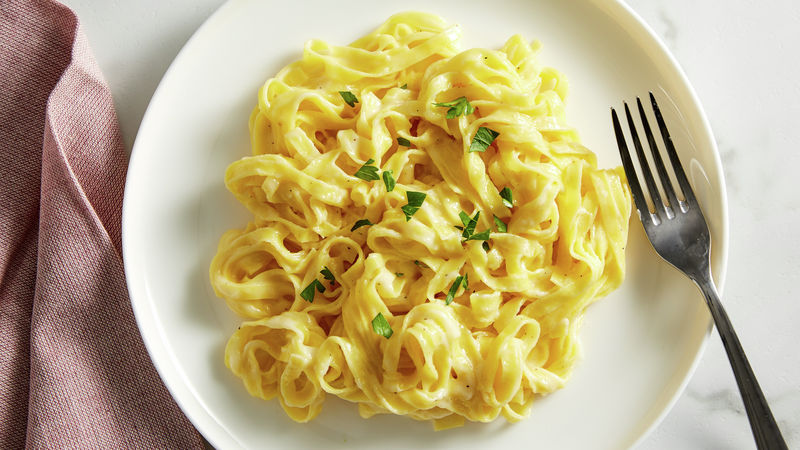

Home
Fettuccine

Description
Wondering how to make Fettuccine Alfredo that's sure to wow family or friends? We've got you covered with a recipe that takes just 25 minutes. Put a pot of water on to boil, then stir the white sauce together as the pasta is cooking. It's just that easy to create a rich and satisfying dinner! This top-rated Fettuccine Alfredo recipe is a favorite of home cooks everywhere—try it tonight and find out why
Ingrediants
- 8
oz uncooked fettuccine
- 1/2
cup butter, cut into pieces
- 1/2
cup whipping cream
- 3/4
cup grated Parmesan cheese
- 1/2
teaspoon salt
- 1/8 teaspoon black or white pepper
- Chopped fresh parsley
Steps
- Cook and drain fettuccine as directed on package.
- Meanwhile, in 10-inch skillet, heat butter and whipping cream over medium heat, stirring frequently, until butter is melted and mixture starts to bubble. Reduce heat to low; simmer uncovered 6 minutes, stirring frequently, until slightly thickened. Remove from heat. Stir in cheese, salt and pepper.
- In large bowl, toss fettuccine with sauce until well coated. Sprinkle with parsley..